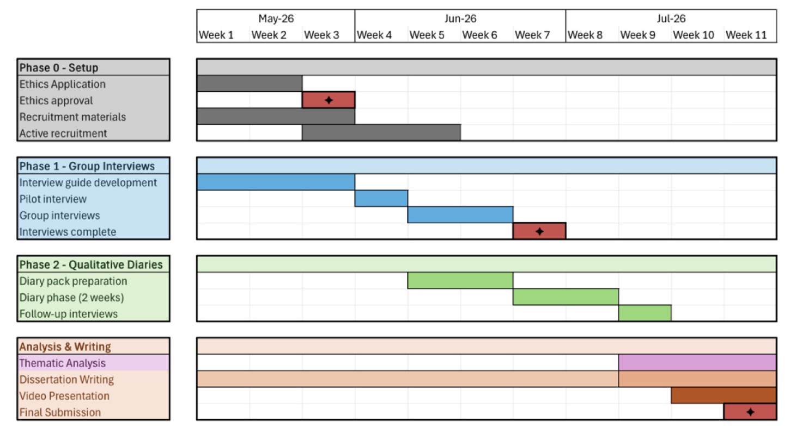

My MSc project proposal for the Research Studies for Computing and Creative Technologies module at Glasgow Caledonian University. It investigates how families, couples and friends manage the money and logistics of sharing one car: an everyday practice that is common but almost invisible in research. This proposal evolved into my dissertation, DriveFair.
- Researcher (Solo Project)
- Reviewed the literature on sharing, costs, governance and emotions.
- Defined the research question and five hypotheses.
- Designed a two-phase qualitative study with a timeline, ethics and risk plan.
Commercial car sharing like Zipcar has been studied extensively, but "sharing in", within a trusted group, has not. It is invisible (no digital trace), complex (co-ownership, lending, access) and sensitive (it involves money and negotiation).
- Economic: Owners underestimate the real cost of a car by around 50%.
- Equity: Sharing gives access to people who can't afford a car of their own.
- Generational: Younger adults increasingly prioritise access over ownership.
- Sharing in vs sharing out: Belk's distinction between sharing with strangers and sharing
within a trusted group.
- Hidden costs: Fuel is shared, but depreciation and insurance are forgotten.
- Rules and conflict: 81.7% support explicit rules in sharing, yet informal groups rarely
have any.
- Emotions: "Sharing pride" in being financially smart, and "sharing shame" in depending on
others.
- Sensitive by design: Questions start with logistics before money and emotions, and the
word "shame" is never used with participants.
- Privacy: Informed consent, anonymised data and private follow-up interviews.
- Contingency plans: If too few people join the diary phase, it switches to a second group
interview. If ethics approval is delayed, preparation and pilot work continue.
75%
of French households with more drivers than cars share a car regularly.
15%
of US households are "car-deficit", with more drivers than vehicles.
50%
is how much owners underestimate the real cost of their car, making a fair split almost impossible.
"How do trusted groups currently manage the financial and logistical aspects of sharing a vehicle?"
Phase 1
The whole sharing group is interviewed together, revealing how they interact: who talks first, who holds back, and where their stories differ.
Phase 2
Engaged participants note who used the car, who paid and any clashes as they happen, then talk privately in a follow-up interview.
Analysis
Following Braun and Clarke, using the hypotheses as starting points while staying open to new themes.
